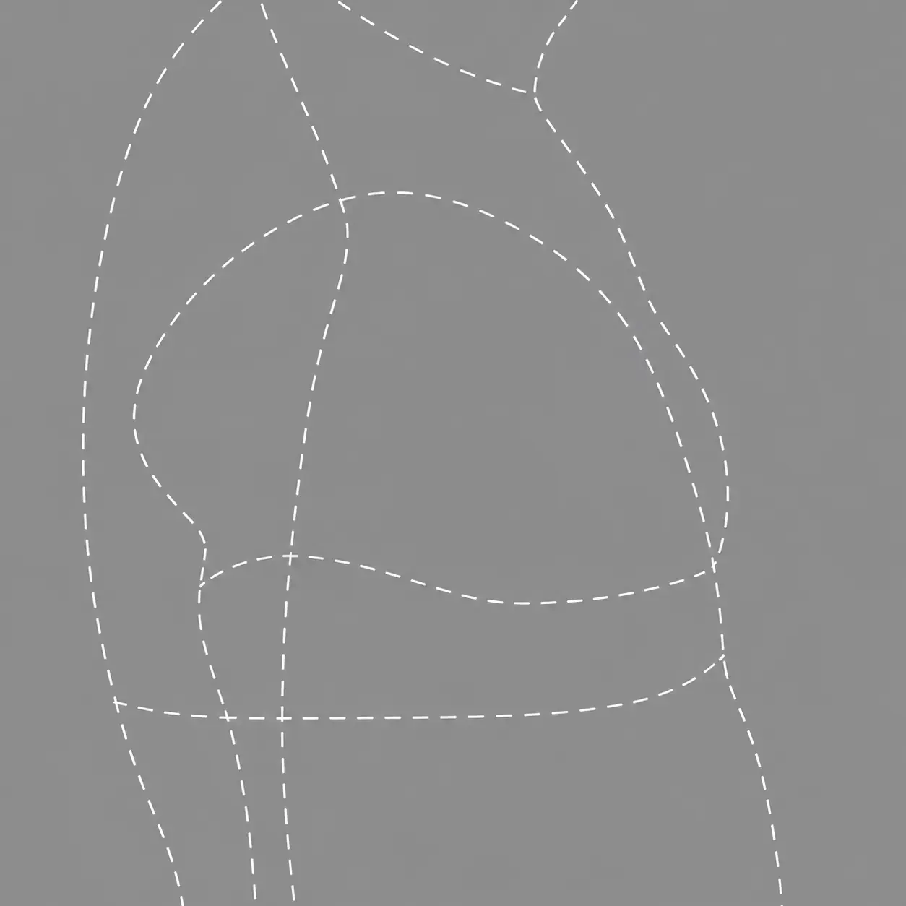

Measurements
The most important part of making custom jeans is measuring the customer. We use 3D body scanning to take measurements of each person's body shape and create a more accurate design for each garment. The measurements are then put into a computer system, which helps us to improve our patterns and make changes as we go along.
Regardless of gender or body shape, every body is unique. Our aim is to create garments specifically for you, moving beyond standard sizing and focusing on individuality, comfort, and the perfect fit.